163 — Terraform multi-provider y separación de estados
Parte: 13 — Multi-cloud, híbrido, migración y recuperación
Nivel: experto · Horas estimadas: 4
Laboratorio: iac · Estado: EXECUTABLE_CORE
🎯 Propósito
Declarar infraestructura en varios proveedores sin cometer el error que la clase 158 ya describió en su forma general: intentar un módulo común que sirva para todos. La clase muestra por qué eso produce un condicional gigante que expone la intersección, propone la alternativa —un módulo por proveedor con la misma interfaz— y dedica el resto a lo que de verdad decide si esto se puede operar: cómo se reparte el estado, que es lo que fija el radio de daño de cada cambio y qué se puede aplicar cuando un proveedor no responde.
📚 Resultados de aprendizaje
Al finalizar podrás:
- Rechazar el módulo común y sustituirlo por uno por proveedor con la misma interfaz.
- Repartir el estado por ciclo de vida, radio de daño, proveedor y dueño.
- Pasar datos entre estados sin acoplarlos de forma rígida.
- Configurar credenciales por proveedor con identidad federada y acotada.
- Detectar deriva y ordenar dependencias que cruzan proveedores.
🧩 Conceptos centrales
| Concepto | Comprensión verificable |
|---|---|
módulo por proveedor |
Implementación específica con la misma interfaz de entradas y salidas que su equivalente en otro proveedor. |
estado |
Registro de lo que la herramienta cree haber creado. Su alcance decide el radio de daño y quién puede aplicar cambios. |
radio de daño del estado |
Todo lo que un solo aplicado erróneo puede destruir. Es el criterio principal para repartir. |
salidas publicadas |
Contrato explícito de lo que un estado expone a los demás. Sustituye a leer el estado ajeno entero. |
proveedor con alias |
Varias configuraciones del mismo o de distintos proveedores en un mismo componente, cada una con su identidad. |
dependencia entre proveedores |
Un recurso de un proveedor que necesita un valor creado en otro. Se resuelve con orden explícito y datos publicados, no con un estado común. |
🧠 Modelo mental
Multi-cloud es una decisión de negocio y riesgo; duplicar cada componente entre proveedores rara vez es la forma más confiable o económica de lograrla.
Aplicado a esta clase, separa siempre cuatro planos: intención (qué necesita el usuario), configuración (qué declaramos), estado observado (qué existe de verdad) y evidencia (cómo sabemos que cumple). Confundirlos produce diseños que se ven correctos en un diagrama pero fallan al operar.
🗺️ Flujo de razonamiento

📖 Desarrollo
1. Un módulo por proveedor, no uno para todos
La propuesta aparece siempre: un módulo «base de datos» que sirva para los dos proveedores, con una variable que diga cuál.
Y falla por los mismos motivos que la capa de abstracción de la clase 158, en versión declarativa:
los recursos no tienen la misma forma
distintos campos obligatorios
distinta forma de expresar red, copias, cifrado y permisos
distintos valores por defecto y distintas unidades
→ el módulo se llena de condicionales
→ y solo puede exponer lo que existe en los dos
→ es decir, el mínimo común denominador clase 157
Y la alternativa, que es la de siempre en este programa:
UN MÓDULO POR PROVEEDOR, CON LA MISMA INTERFAZ
entradas iguales nombre, tamaño, entorno, retención, etiquetas
salidas iguales punto de acceso, identificador, nombre del secreto
implementación distinta, y usando a fondo lo que ofrece cada uno
Y lo que se gana:
quien lo usa escribe lo mismo en los dos casos
cada módulo aprovecha lo mejor de su proveedor
no hay condicionales
y se pueden probar por separado clase 090
Y la disciplina que lo sostiene:
las interfaces se documentan y se versionan como contratos clase 153
y hay una prueba que comprueba que las dos ofrecen las mismas
entradas y salidas
→ sin esa prueba, divergen en tres meses
Y la excepción razonable, para no caer en el extremo contrario:
lo que sí puede ser común
la convención de nombres y etiquetas
la validación de entradas
el cálculo de valores derivados
→ eso vive en un módulo auxiliar sin recursos, y lo usan los dos
Y una nota sobre las versiones de los complementos de proveedor, que es la clase 138 aplicada aquí:
se fijan con huella, como cualquier dependencia
y se actualizan con cadencia, no cuando algo falla
→ una actualización de complemento puede cambiar el plan sin que
nadie haya tocado nada
2. Repartir el estado
El estado es el registro de lo que la herramienta cree haber creado, y su alcance decide dos cosas críticas:
el RADIO DE DAÑO de un aplicado erróneo
y qué se puede cambiar cuando algo no responde
Los cuatro criterios de reparto, por orden de importancia:
1. POR PROVEEDOR, SIEMPRE
un estado que abarca dos proveedores significa que
una incidencia en uno bloquea los cambios en el otro
→ y el aplicado falla a medias, dejando lo aplicado sin registrar
2. POR RADIO DE DAÑO
¿qué estoy dispuesto a romper de una vez?
→ la red base y la identidad, en estados propios y muy revisados
→ una carga concreta, en el suyo
3. POR CICLO DE VIDA
lo que cambia junto, junto; lo que cambia a ritmos distintos, aparte
→ la red cambia dos veces al año; el servicio, a diario
4. POR DUEÑO
cada estado tiene un equipo que lo aplica clase 095
Y el reparto típico que sale de aplicarlos:
por proveedor y entorno
cimientos organización, cuentas, identidad, políticas
red rangos, subredes, salida, resolución de nombres
datos bases, almacenes, claves
plataforma clúster, registro, herramientas comunes
por servicio una por carga
Y el compromiso que hay que aceptar, que es un traslado de la clase 155:
más estados menos radio de daño, más coordinación entre ellos
menos estados más atomicidad, y un error afecta a más
Y dos señales de que el reparto está mal:
un aplicado rutinario tarda más de unos minutos en planificar
→ el estado abarca demasiado
un cambio pequeño exige aplicar cuatro estados en orden
→ el reparto no sigue el ciclo de vida
Lo que debe estar en un estado aparte y muy protegido, con la disciplina de la clase 144:
lo que no se puede recrear: bases con datos, claves clase 136
lo que romperlo deja sin acceso: identidad y red
y lo que borrarlo es irreversible
→ con protección contra destrucción y aprobación de dos personas
Y el almacenamiento del propio estado, que es un recurso crítico:
remoto, versionado y con bloqueo clase 087
cifrado, y con acceso restringido: contiene datos sensibles
y en el proveedor al que gobierna, para no depender del otro
La última línea importa: guardar el estado del proveedor B en el proveedor A significa que una caída de A impide arreglar B.
3. Pasar datos entre estados
Con el estado repartido, un estado necesita valores creados por otro. Tres formas, de más acoplada a menos:
LEER EL ESTADO AJENO DIRECTAMENTE
+ simple
− acopla: cualquier reorganización interna del otro rompe
− y exige permiso de lectura sobre un fichero con datos sensibles
SALIDAS PUBLICADAS COMO CONTRATO
el estado productor declara qué expone, con nombres estables
el consumidor lee solo eso
→ es la clase 153 aplicada a la infraestructura
→ y permite cambiar el interior sin romper a nadie
BUSCAR POR ETIQUETA O POR NOMBRE
el consumidor localiza el recurso por su etiqueta de servicio
+ sin acoplamiento a ningún estado
− hay que garantizar unicidad y que la etiqueta no cambie
− y falla en el momento de aplicar, no en el de planificar
Y la recomendación práctica:
dentro de un mismo dueño y entorno salidas publicadas
entre equipos distintos salidas publicadas, versionadas
entre proveedores valores explícitos, pasados
como variables
Y la última merece detalle, porque es el caso propio de esta clase:
un registro de nombres en A que apunta a un balanceador de B
mal un estado que abarque los dos, para poder referenciarlo
bien el estado de B publica la dirección
un paso de la canalización la toma y la pasa como variable
al estado de A
→ dos aplicados, en orden, con el valor viajando entre ellos
Y la regla que evita el enredo:
las dependencias entre estados forman un grafo SIN CICLOS,
y está dibujado
→ si A necesita algo de B y B algo de A, hay que romper el ciclo
con un valor fijado de antemano —un nombre, un rango— en vez
de uno generado
Las credenciales, que con varios proveedores tienen su propia trampa:
cada bloque de proveedor lleva su identidad
y esa identidad viene de la federación de la canalización clases 098, 159
lo que hay que comprobar
¿la identidad de la canalización está acotada por rama y entorno?
¿el estado de producción solo se puede aplicar desde el flujo
de producción?
¿alguien puede aplicar a mano con credenciales personales?
La última debería ser no, y con el bucle de reconciliación de la clase 103 lo es por construcción.
4. Deriva, orden y pruebas
La deriva de la clase 090 se multiplica con varios estados y proveedores:
planificar de forma programada cada estado, sin aplicar
y alertar por diferencias, con la excepción de los campos que
gestionan otros controladores clase 103
Y lo que cambia con dos proveedores:
las diferencias no son comparables entre sí: cada complemento
las expresa a su manera
→ conviene normalizar el resultado a «cuántos recursos difieren
y de qué tipo», que sí se puede comparar y vigilar clase 162
Y la señal que la ley 13 exige, y que aquí se duplica:
alerta por ANTIGÜEDAD de la última planificación correcta,
por estado y por proveedor
→ un estado que dejó de planificarse no da ningún error
El orden de aplicación entre estados hay que declararlo:
cimientos → red → datos → plataforma → servicios
Y con dos proveedores, el orden cruza:
cimientos de A → cimientos de B → red de A → red de B → …
Y la forma de gestionarlo sin construir un orquestador propio:
la canalización aplica en orden, por etapas clase 099
cada etapa publica sus salidas
y un fallo en una etapa detiene las siguientes
→ y hay que poder reanudar desde donde falló, no desde el principio
Las pruebas, que son las de la clase 090 con una adición:
análisis del plan antes de aplicar clase 091
→ ningún borrado de recurso con datos, ninguna región no autorizada
comprobación de que los módulos equivalentes tienen la misma interfaz
entorno efímero que crea y destruye de verdad clase 104
→ en los dos proveedores, no solo en el principal
y prueba de portabilidad: que el módulo del segundo proveedor
se aplica limpio clase 158
Y una comprobación que evita sorpresas caras:
en el plan, avisar cuando un cambio implique DESTRUIR Y RECREAR
→ es la ley 14 hecha visible: hay campos que no se pueden cambiar
en sitio, y el plan lo dice si alguien lo lee
→ y con datos dentro, eso es una pérdida
Y la lista de comprobación de la clase:
☐ no existe un módulo común para varios proveedores
☐ los módulos equivalentes tienen la misma interfaz, comprobada
☐ las versiones de los complementos están fijadas con huella
☐ el estado está repartido por proveedor, radio de daño, ciclo de vida y dueño
☐ ningún estado abarca dos proveedores
☐ el estado de cada proveedor se guarda en ese proveedor
☐ el estado está cifrado, versionado, con bloqueo y acceso restringido
☐ los datos entre estados pasan por salidas publicadas o variables
☐ el grafo de dependencias entre estados no tiene ciclos y está dibujado
☐ cada bloque de proveedor usa identidad federada y acotada
☐ nadie aplica a mano con credenciales personales
☐ hay planificación programada por estado y alerta por antigüedad
☐ el plan avisa de destrucciones y recreaciones
☐ los entornos efímeros se crean también en el segundo proveedor
Y el cierre que enlaza con la clase siguiente: con la infraestructura declarada por proveedor, queda la capa que sí es común y que puede acabar siendo una flota difícil de gobernar: varios clústeres en varios proveedores, con las mismas políticas. Es la materia de la clase 164.
🔬 Ejemplo trabajado
CloudShop declara infraestructura en dos proveedores. Empieza con un módulo común y un estado único, y llega a nueve estados y módulos separados tras dos incidentes que explican por qué.
El módulo común, y por qué se abandonó.
intento: un módulo «base de datos» con una variable de proveedor
líneas del módulo 410
de ellas, condicionales por proveedor 240 (59 %)
parámetros expuestos 14
parámetros disponibles en el proveedor A 41
parámetros disponibles en el proveedor B 37
Catorce de cuarenta y uno: el módulo exponía la intersección, y las funciones específicas de cada proveedor quedaban inaccesibles.
Y el fallo que lo cerró:
al añadir una opción de copia disponible solo en A,
hubo que añadir un condicional más y una variable que en B
se ignoraba en silencio
→ alguien la usó pensando que hacía algo
→ una carga de B estuvo 3 meses sin la retención que creía tener
```text módulo común dos módulos líneas totales 410 180 + 165 condicionales por proveedor 240 0 parámetros expuestos 14 41 y 37 variables ignoradas en silencio 3 0 prueba de interfaz equivalente no sí
Y la prueba de interfaz, que se ejecuta en cada cambio:
```text
comprueba que los dos módulos aceptan las mismas 9 entradas
y devuelven las mismas 5 salidas
divergencias detectadas en 8 meses 4
→ todas, alguien añadiendo una entrada a uno solo
El estado único, y los dos incidentes.
situación inicial un estado por entorno, abarcando los dos proveedores
recursos en el estado de producción 1.180
tiempo de planificación 6 min 40
Incidente 1: un proveedor caído bloquea el otro.
10:20 incidencia en el segundo proveedor: su API no responde
10:22 hay que aplicar un cambio urgente en el PRIMERO
10:22 el plan falla: no puede leer el estado de los recursos de B
10:22 no se puede aplicar nada, en ninguno de los dos
11:40 se resuelve la incidencia de B
tiempo sin poder cambiar nada 1 h 18
cambio urgente que esperaba una regla de cortafuegos
Incidente 2: un aplicado erróneo con radio de daño enorme.
un cambio en el módulo de red se aplicó sobre el estado de producción
el plan proponía destruir y recrear 3 subredes
nadie leyó el plan completo: tenía 340 líneas
recursos destruidos 41
tiempo de recuperación 2 h 10
El reparto resultante.
estados, tras el reparto 9
proveedor A: cimientos, red, datos, plataforma, 3 servicios
proveedor B: cimientos, red y las 3 cargas en un estado por carga
recursos por estado, mediana 110
tiempo de planificación, mediana 41 s
radio de daño del mayor red de un entorno
```text antes después estados 3 9 estados que abarcan dos proveedores 3 0 tiempo de planificación 6 min 40 41 s un proveedor caído bloquea el otro sí no líneas del plan de un cambio típico 340 28 recursos destruidos por error 41 (una vez) 0
Y la protección añadida sobre los estados críticos:
```text
cimientos, red y datos
protección contra destrucción en los recursos con datos
aprobación de dos personas para aplicar
y aviso destacado en el plan cuando hay destrucción y recreación
planes con destrucción detectados en 8 meses 7
de ellos, intencionados 2
de ellos, errores detenidos por el aviso 5
Cinco destrucciones evitadas por un aviso que antes se perdía entre trescientas cuarenta líneas.
Los datos entre estados.
La primera versión leía el estado ajeno directamente:
lecturas de estado ajeno 14
roturas al reorganizar un estado 3
→ un recurso renombrado internamente rompía a dos consumidores
Y el cambio a salidas publicadas:
```text leer el estado salidas publicadas lo que expone todo el estado 5-9 valores roturas al reorganizar el interior 3 0 permiso necesario lectura del fichero lectura de las salidas versionado no sí
**La dependencia entre proveedores.**
El caso concreto: un registro de nombres en A que apunta al balanceador de B.
```text
mal un estado que abarcara los dos, para poder referenciarlo
→ era exactamente lo que causó el incidente 1
bien el estado de B publica la dirección del balanceador
la canalización la toma y la pasa como variable al estado de A
orden: B primero, A después
etapas de la canalización 6
orden declarado sí
reanudación desde la etapa fallida sí
dependencias entre estados 11
ciclos en el grafo 0
→ hubo 1, resuelto fijando el rango de red de antemano en vez
de generarlo
Las credenciales y la deriva.
```text antes después identidad por proveedor clave estática federada clase 159 acotada por rama y entorno no sí aplicados a mano con credenciales personales 4 / mes 0 planificación programada por estado no cada 6 h, 9 estados alerta por antigüedad de planificación no sí deriva detectada en 8 meses — 19 de ellas, cambios manuales — 4 de ellas, campos de otros controladores — 15 → excluidos
Y el estado propio, guardado donde corresponde:
```text antes después
estado de B guardado en A B
qué pasaba si A caía no se podía arreglar B nada
cifrado, versionado y con bloqueo parcial sí, los 9
acceso al fichero de estado 4 equipos 1 equipo por estado
A los ocho meses.
```text antes después módulos comunes multiproveedor 1 0 módulos por proveedor con interfaz igual 0 2 pares variables ignoradas en silencio 3 0 estados 3 9 estados que abarcan dos proveedores 3 0 tiempo de planificación 6 min 40 41 s líneas del plan de un cambio típico 340 28 destrucciones erróneas detenidas por aviso 0 5 lecturas de estado ajeno 14 0 ciclos en el grafo de dependencias 1 0 aplicados a mano 4 / mes 0 estados con planificación programada 0 de 3 9 de 9
**La lección que esta clase traslada a la parte 13**: el módulo común exponía **catorce parámetros de los cuarenta y uno disponibles** y aceptaba en silencio variables que en un proveedor no hacían nada, lo que dejó una carga tres meses sin la retención que creía tener. Y el reparto del estado no se hizo por elegancia: se hizo porque **una incidencia en un proveedor impidió durante setenta y ocho minutos aplicar un cambio urgente en el otro**, que es exactamente el acoplamiento que un estado compartido introduce sin que nadie lo declare.
## 🧪 Laboratorio guiado
Ejecuta desde la raíz:
```bash
python classes/part-13-multicloud-hybrid-disaster-recovery/163-terraform-multi-provider-y-separacion-de-estados/lab.py
El laboratorio selecciona el motor de práctica iac y produce
lab_result.json. El escenario, sus comprobaciones y el artefacto esperado corresponden a
esta clase; no requiere credenciales y deja explícito qué debe revalidarse en un sandbox real.
- Lee
exercise.stepsy formula una predicción antes de ejecutar. - Ejecuta la práctica y verifica todos los elementos de
checks. - Provoca el caso de
negative_testy explica la señal observada. - Materializa
iac-multicloudenevidence/usando la plantilla indicada. - Para proveedor real, sigue
sandbox.requires, registra costo y ejecutadestroy.
Evidencia esperada
El artefacto principal es un plan reproducible sin secretos ni cambios inesperados. Además, la entrega debe incluir el comando ejecutado, la salida estructurada y una conclusión que no exceda lo observado.
🏆 Reto verificable
Construye iac-multicloud para el caso CloudShop. Incluye una alternativa descartada,
un supuesto que pueda falsarse, una prueba de fallo y una decisión de rollback.
✅ Criterio de aceptación
- [ ]
lab.pytermina con código 0 y genera JSON válido. - [ ] La entrega conecta al menos tres requisitos con mecanismos verificables.
- [ ] Existe una prueba positiva y una prueba negativa con evidencia.
- [ ] Seguridad, costo y operación aparecen como decisiones, no como anexos.
- [ ] Se declara una limitación y una condición que obligaría a revisar el diseño.
- [ ] Otra persona puede repetir el recorrido sin conocimiento tácito.
⚠️ Errores frecuentes
| Síntoma | Causa probable | Corrección |
|---|---|---|
| Un módulo multiproveedor se llena de condicionales y expone pocas opciones | Se intentó abstraer recursos con formas distintas | Un módulo por proveedor con la misma interfaz de entradas y salidas, y una prueba que compruebe que siguen siendo equivalentes. |
| Una variable se acepta y no hace nada en uno de los proveedores | El módulo común la ignora en silencio | Módulos separados que fallen ante una entrada desconocida, en vez de ignorarla. |
| Una incidencia en un proveedor impide aplicar cambios en el otro | Un estado abarca los dos | Reparte el estado por proveedor siempre, y guarda el estado de cada uno en su propio proveedor. |
| Un aplicado erróneo destruye decenas de recursos | El estado abarca demasiado y el plan es tan largo que nadie lo lee | Reparte por radio de daño y ciclo de vida, protege los recursos con datos y destaca las destrucciones en el plan. |
| Reorganizar un estado rompe a otros | Los consumidores leen el estado ajeno completo | Publica salidas con nombres estables y versionadas, y lee solo eso. |
| Un estado deja de planificarse y nadie se entera | Ley 13: no planificar no produce error | Planificación programada por estado con alerta por antigüedad de la última ejecución correcta. |
🛡️ Seguridad, ética y costo
Trabaja con cuentas propias o sandboxes autorizados. No publiques secretos, identificadores reales ni datos personales. Antes de crear recursos pagos define presupuesto, etiquetas y comando de destrucción; después verifica que no queden recursos huérfanos. Los ejemplos locales enseñan contratos, pero no certifican cumplimiento ni disponibilidad de producción.
❓ Preguntas de comprobación
- ¿Por qué falla un módulo común para varios proveedores y qué lo sustituye?
- ¿Cuáles son los cuatro criterios para repartir el estado y cuál es innegociable?
- ¿Por qué el estado de un proveedor debe guardarse en ese proveedor?
- ¿Qué tres formas hay de pasar datos entre estados y cuál se recomienda entre equipos?
- ¿Cómo se resuelve una dependencia entre proveedores sin un estado común?
🔗 Referencias
- HashiCorp (2025). Terraform: multiple provider configurations and aliases — varios proveedores en una misma configuración. https://developer.hashicorp.com/terraform/language/providers/configuration
- HashiCorp (2025). State: remote backends, locking and separation — almacenamiento, bloqueo y reparto del estado. https://developer.hashicorp.com/terraform/language/state/remote
- HashiCorp (2025). Module composition and interfaces — módulos con interfaces estables en vez de módulos condicionales. https://developer.hashicorp.com/terraform/language/modules/develop/composition
- Brikman, Y. (2022). Terraform: Up & Running, caps. 3 y 8 — reparto de estados y dependencias entre ellos. https://www.terraformupandrunning.com/
- Open Policy Agent (2025). Policy checks on infrastructure plans — análisis del plan antes de aplicar. https://www.openpolicyagent.org/docs/latest/terraform/
- Documentación oficial vigente del servicio implementado; registra URL y fecha de consulta.
📥 Descargar: Parte 13 en PDF · Manual integral